整理自谢希仁著《计算机网络》。
简介
所有的因特网标准都是以 RFC（Request For Comments）的形式在因特网上发表。
制订因特网的正式标准要经过四个阶段 [RFC 2026]：
- 因特网草案（Internet Draft）——还不是 RFC 文档
- 建议标准（Proposed Standard）——开始成为 RFC 文档
- 草案标准（Draft Standard）
- 因特网标准（Internet Standard）
通信方式大致分为两大类
- C/S（Client/Server）
- B/S（Browser/Server）：C/S 的一种特例，特指客户端为浏览器的情况
- P2P（Peer-to-Peer）
性能指标
速率
bit/s
带宽
对于模拟信号来说指的是频域宽度。对于数字信号来说指的是额定速率。
吞吐量
单位时间内通过的数据量。上限为额定速率。
时延
总时延 = 发送时延 + 传播时延 + 处理时延 + 排队时延
时延带宽积
表示已发送未接收的数据量。
往返时间 RTT
Round-Trip Time
利用率
信道利用率指某信道有百分之几的时间被利用。网络利用率是全网络的信道利用率的加权平均。
根据排队理论，当某信道的利用率增大时，该信道引起的时延也迅速增加。
令 D0 表示网络空闲时的时延，D 表示网络当前的时延，U 表示利用率，那么在适当的假定条件下，有以下公式：
D = D0 / (1 - U)
体系结构
| OSI | TCP/IP | 方便理解的 5 层协议结构 |
|---|---|---|
| 应用层 | 应用层（TELNET,FTP,SMTP 等） | 应用层 |
| 表示层 | ||
| 会话层 | ||
| 运输层 | 运输层（TCP 或 UDP） | 运输层 |
| 网络层 | 网际层（IP） | 网络层 |
| 数据链路层 | 网络接口层 | 数据链路层 |
| 物理层 | 物理层 |
应用层 application layer
应用层直接为用户的进程提供服务。包括 HTTP、SMTP、FTP 等。
运输层 transport layer
运输层负责向两个主机中进程之间的通信提供服务。运输层有复用和分用的功能。复用就是多个进程可同时使用下面运输层的服务，分用则是运输层把收到的信息分别交付给上面应用层的相应进程。
运输层主要使用两种协议：
- 传输控制协议 TCP（Transmission Control Protocol）——面向连接的，数据传输的单位是报文段（segment），能提供可靠的交付。
- 用户数据报协议 UDP（User Datagram Protocol）——无连接的，数据传输的单位是用户数据报，不保证提供可靠的交付，只能提供“尽最大努力交付”。
网络层 network layer
网络层负责为分组交换网上的不同主机提供通信服务。在发送数据时，网络层把运输层产生的报文段或用户数据报封装成分组或包进行传送。在 TCP/IP 体系中，由于网络层使用 IP 协议，因此分组也叫 IP 数据报。
运输层的“用户数据报 UDP”和网络层的“IP 数据报”不是一回事。
数据链路层 data link layer
数据链路层将网络层交下来的 IP 数据报组装成帧（framing），在相邻节点间的链路上透明地传送帧中的数据。每一帧包括数据和必要的控制信息（如同步信息、地址信息、差错控制等）。
物理层 physical layer
物理层的任务就是透明地传送比特流。物理层要考虑用多大的电压代表 1 和 0，以及接收方如何识别出发送方所发送的比特。物理层还要确定连接电缆的插头应当有多少根引脚以及各条引脚应如何连接。
网线等物理媒体不在物理层协议之内控制，它们在物理层下面。
物理层
基本概念
物理层的主要任务是确定与传输媒体的接口有关的一些特性：
- 机械特性：指明接口所用的接线器的形状和尺寸、引脚数目和排列、固定和锁定装置等。
- 电气特性：指明接口电缆的各条线上出现的各条线上出现的电压的范围。
- 功能特性：指明某条线上出现的某一电平的电压表示何种意义。
- 过程特性：指明对于不同功能的各种可能事件的出现顺序。
基础知识
信道的极限容量
奈奎斯特准则
设低通信道的带宽为 W Hz，则最高码元传输速率为 2W Baud。
信噪比
设 S 和 N 分别为信号的平均功率和噪声的平均功率。
$信噪比 = 10 log_{10}(S/N) dB$
信道的极限信息传输速率为 $C = W log_{2}(1+S/N) (b/s)$
只要信息传输速率低于信道的极限信息传输速率，就一定可以找到某种办法来实现无差错的传输。
数据链路层
封装成帧
数据链路层的分组单位是“帧”。不完整的帧会被丢弃。
帧 = 帧首部 + IP 数据报（网络层的分组单位）+ 帧尾部
首部以 SOH（Start Of Header，0x01）开始，尾部以 EOT（End Of Transmission，0x04）结束。
透明传输
IP 数据报部分若有 SOH 或 EOT 或 ESC 字符，则在之前填充转移字符 ESC（0x1B）。接收端的数据链路层会删除这些转义字符。
差错检测
数据链路层广泛使用循环冗余检测 CRC（Cyclic Redundancy Check）检错技术。
- 把数据分组，每组 k 比特，设每组的数据称为 M；
- 收发双方约定一个 n + 1 位的除数 P；
- 计算 $2^{n}*M/P$，即 M 后加 n 个 0，然后除以 P，得到 n 位余数 R；
- 将 $2^{n}*M+R$ 作为待发送的分组。
- 接收端将每组数据除以 P，若余数为 0 则认为数据正确。
常用的除数：
CRC-16：1 10000000 00000101
CRC-CCITT：1 00010000 00100001
CTC-32：1 00000100 11000001 00011101 10110111
点对点协议 PPP
PPP 协议（Point-to-Point Protocol）是目前使用最广泛的个人计算机到 ISP 的数据链路层协议。
PPP 应满足的需求
- 简单：旨在提高协议不同实现之间的互操作性。
- 封装成帧：必须规定帧界定符。
- 透明性：必须解决数据中碰巧出现界定符的问题。
- 多种网络层协议：必须能在同一条物理链路上同时支持多种网络层协议。
- 多种类型链路：必须能在多种类型的链路上运行——串行并行、同步异步、低速高速、电的光的、交换的非交换的。
- 差错检测：必须能对接收到的帧进行检错，并立即丢弃差错帧。
- 检测连接状态：必须有一种机制能及时自动检测出链路是否处于正常工作状态。
- 最大传送单元：必须对每一种类型的点对点链路设置最大传送单元 MTU 的标准默认值。这旨在促进各种实现之间的互操作性。
- 网络层地址协商：必须提供一种机制使通信的两个网络层的实体能够通过协商知道或能够配置彼此的网络地址。
- 数据压缩协商：必须提供一种方法来协商使用数据压缩算法。
PPP 协议不需要的功能
- 纠错：在 TCP/IP 协议族中，可靠传输由运输层的 TCP 协议负责。
- 流量控制：在 TCP/IP 协议族中，端到端的流量控制由 TCP 负责。
- 序号：PPP 不是可靠传输协议。
- 多点线路：PPP 协议不支持多点线路，只支持点对点的链路通信。
- 半双工或单工链路：PPP 协议只支持全双工链路。
PPP 协议的组成
- 一个将 IP 数据报封装到串行链路的方法。PPP 既支持异步链路（无奇偶校验的 8 比特数据），也支持面向比特的同步链路。
- 一个用来建立、配置和测试数据链路连接的链路控制协议 LCP（Link Control Protocol）。
- 一套网络控制协议 NCP（Network Control Protocol），其中每一个协议支持不同的网络层协议。
PPP 协议的帧格式
字段的意义
1 | F A C 协议 信息部分 FCS F |
- 标志字段 F（Flag）规定为 0x7E，是 PPP 帧的定界符。连续两帧之间只需要一个标志字段。出现连续两个标志字段表示空帧，应丢弃
- 地址字段 A 规定为 0xFF，控制字段 C 规定为 0x03。曾考虑以后再对这两个字段的值进行其他定义，但至今也没给出。
- 协议字段。0x0021 表示数据部分为 IP 数据报，0xC021 表示信息部分是 PPP 链路控制协议 LCP 的数据，0x8021 表示这是网络层的控制数据。
- 信息部分长度可变，不超过 1500 字节。
- FCS 是使用 CRC 的帧检验序列。
字节填充
当 PPP 使用异步传输时，把转义符定义为 0x7D，并使用字节填充，RFC 1662 规定如下：
- 把信息字段中出现的每一个 0x7E 转变成 0x7D, 0x5E；
- 若信息字段中出现一个 0x7D，则把它转换为 0x7D, 0x5D；
- 若信息字段中出现 ASCII 码的控制字符（即小于 0x20 的字符），则在它前面加入一个 0x7D，同时将该字符的编码加以改变。
零比特填充
PPP 协议用在 SONET/SDH 链路时，是使用同步传输的。这种情况下 PPP 采用零比特填充方法来实现透明传输。
- 在发送端，扫描整个信息字段。对于 5 个连续的 1，在后面填入一个 0。这样可以保证不会出现 6 个连续的 1，即不会与定界符 0x7E（0111 1110）混淆。
- 在接收端，先找到标志字段 F 以确定帧边界，接着扫描整个信息字段，把 5 个连续的 1 后面的 0 删去。
PPP 协议的工作状态
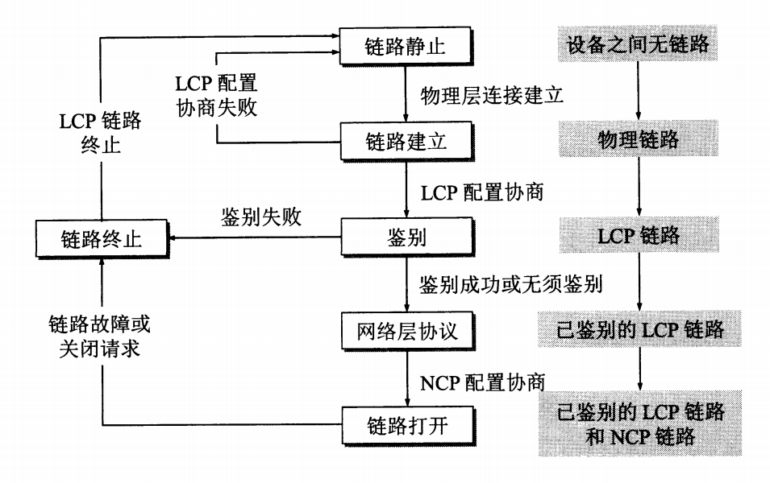
PPP 协议不是纯粹的数据链路层协议，还包含了物理层和网络层的内容。
使用广播信道的数据链路层
局域网的数据链路层
局域网的拓扑结构一般分为总线网、环形网、星形网。
适配器
适配器即早先的网卡，后被整合进主板中。适配器自身带有处理器和存储器，主要负责数据串并行的转换、通过缓存解决网络和计算机总线数据速率不同的问题。适配器一般都包含了数据链路层和物理层两个层次的功能。
计算机的硬件地址在适配器的 ROM 中，软件地址（IP 地址）在计算机的存储器中。
总线网
以太网采用的 CSMA/CD 协议
载波监听多点接入/碰撞检测（Carrier Sense Multiple Access with Collision Detection）。
以太网采用的编码
曼彻斯特编码：每个码元扩展为两个码元，根据两个码元间的上升/下降沿来区别 1 和 0。
要点归纳
- 准备发送：适配器从网络层获得一个分组，加上以太网的首部和尾部，组成以太网帧，放入适配器缓存中。在发送之前，必须先检测信道。
- 检测信道：若检测到信道忙，则应不停地检测，一直等待信道转为空闲。若检测到信道空闲，并在 96 比特空闲时间内信道保持空闲（保证了帧间最小间隔），就发送这个帧。
- 在发送过程中仍不停地检测信道：
- 发送成功：在争用期内一直为检测到碰撞。这个帧肯定能发送成功。发送完毕后，直接回到 1. 准备发送。
- 发送失败：在争用期内检测到碰撞。这时立即停止发送数据，并按规定发送人为干扰信号。适配器接着就执行指数退避算法，等待 r 倍 512 比特时间后，返回 2. 检测信道，继续检测信道。若重传达 16 次仍不能成功，则停止重传并向上报错。
- 以太网每发送完一帧，一定要把这帧暂时保留一下。如果在争用期内检测出发生了碰撞，那么还要在推迟一段时间后再把这个暂时保留的帧重传一次。
星形网
星形网的中心是集线器（hub）。
- 使用集线器的以太网在逻辑上仍是一个总线网，各站共享逻辑上的总线，使用的还是 CSMA/CD 协议。
- 集线器工作在物理层，它的每个接口只是简单地转发比特，不进行碰撞检测。
- 集线器采用了专门的芯片，进行自适应串音回波抵消。这样就可使接口转发出去的较强信号不致对该接口接收到的较弱信号产生干扰。每个比特在转发前还要进行再生整形并重新定时。
以太网的 MAC 层
MAC 层的硬件地址
MAC 地址最初为 16 位，后改为 48 位。
IEEE 的注册管理机构 RA（Registration Authority）是局域网全球地址的法定管理机构，它负责分配 6 个字节中的前三个字节。世界上所有局域网适配器厂商必须向 IEEE 购买前三个字节的号码，这个号码称为组织唯一标识符 OUI（Organizationally Unique Identifier），通常也叫做公司标识符。地址中的后三字节有厂商自行指派，称为扩展标识符。
48 位号码整体称为扩展的唯一标识符 EUI-48（Extended Unique Identifier）。
网络层
网际协议 IP
与 IP 协议配套使用的还有三个协议：
- 地址解析协议 ARP（Address Resolution Protocol）
- 网际控制报文协议 ICMP（Internet Control Message Protocol）
- 网际组管理协议 IGMP（Internet Group Management Protocol）
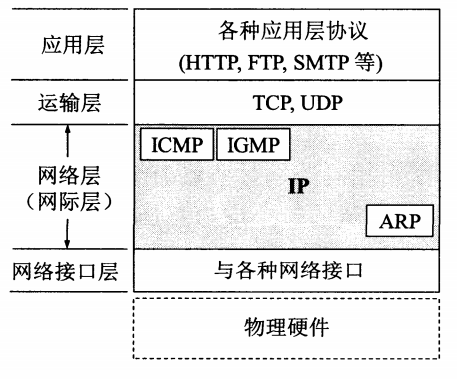
虚拟互连网络
将网络互相连接起来要使用一些中间设备：
- 物理层：转发器（repeater）
- 数据链路层：网桥，也称桥接器（bridge）
- 网络层：路由器（router）
- 网络层以上：网关（gateway）
转发器和网桥仅仅是把网络扩大了，从网络层来看仍是一个网络。网管由于比较复杂，使用的较少。一般使用路由器进行网络互连。
分类的 IP 地址
IP 地址及其表示方法
IP 地址现在由互联网名字和数字分配机构 ICANN（Internet Corporation for Assigned Names and Numbers）进行分配。
IP 地址 ::= {<网络号>,<主机号>}
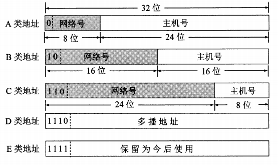
A 类、B 类和 C 类地址都是单播地址。
A 类地址可指派的网络号是 $2^7-2$ 个。网络号字段全 0 表示本网络，127 表示环回地址。主机号全 0 表示本主机，全 1 表示该网络上的所有主机。
B 类地址中，128.0.0.0 是不指派的。
C 类地址中，192.0.0.0 是不指派的。
| 网络类别 | 首个可指派的网络号 | 末个可指派的网络号 |
|---|---|---|
| A | 1 | 126 |
| B | 128.1 | 191.255 |
| C | 192.0.1 | 223.255.255 |
一般不使用的特殊 IP 地址
| 网络号 | 主机号 | 源地址使用 | 目的地址使用 | 代表意思 |
|---|---|---|---|---|
| 0 | 0 | 可以 | 不可 | 在本网络上的本主机 |
| 0 | host-id | 可以 | 不可 | 在本网络上的某台主机 host-id |
| 全 1 | 全 1 | 不可 | 可以 | 只在本网络上进行广播（各路由器均不转发） |
| net-id | 全 1 | 不可 | 可以 | 对 net-id 上的所有主机进行广播 |
| 127 | 非全 0 或全 1 的任何数 | 可以 | 可以 | 用于本地软件环回测试 |
IP 地址的一些重要特点
- IP 地址管理机构只分配网络号。
- 路由器仅根据网络号来转发分组。
- IP 地址是标志一台主机或路由器与一条链路的接口。因此当一台主机连接到多个网络时必须有多个 IP 地址。
- 具有不同网络号的局域网必须使用路由器进行互连。用转发器或网桥连接起来的若干个局域网仍为一个网络。
IP 地址与硬件地址
物理地址是数据链路层和物理层使用的地址，而 IP 地址是网络层和以上各层使用的逻辑地址。
地址解析协议 ARP
IP 协议使用 ARP 协议来将 IP 地址解析成硬件地址。ARP 解决的是同一局域网上的主机或路由器 IP 地址和硬件地址的映射问题。
每台主机都有一个 ARP 高速缓存，里面有本局域网上的各主机和路由器的 IP 地址到硬件地址的映射表。
设主机 A 要向主机 B 发送 IP 数据报。
- A 先在自己的 ARP 高速缓存中查看有无 B 的 IP 地址，有则写入 MAC 帧，无（可能 B 刚入网或 A 刚加电）则进行以下步骤；
- A 的 ARP 进程在局域网上广播一个 ARP 请求分组，内容主要是表明 A 的 IP 地址、物理地址，同时询问 XX IP 地址主机的物理地址；
- 在局域网上的所有主机上运行的 ARP 进程都收到此 ARP 请求分组；
- 主机 B 收下这个 ARP 请求分组，并向 A 发送 ARP 响应分组（此响应为单播），该分组中写有 B 的物理地址；
- A 在 ARP 缓存中写入 B 的 IP 地址到物理地址的映射。
若主机 B 在另一个局域网上，则由路由器来通过 ARP 请求进行接力传递。
各种网络使用的是不同的硬件地址，直接进行硬件地址转换会非常复杂。IP 地址屏蔽了这种复杂的转换，转而变成了一系列“查询-映射”的步骤。
IP 数据报的格式
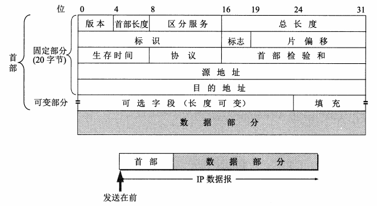
- 版本：占 4 位，指 IP 协议的版本（IPv4、IPv6）。通信双方的版本必须一致。
- 首部长度：占 4 位。首部长度字段表示的单位是 32 为字（即多少个 4 字节）。当 IP 分组的首部长度不是 4 字节的整数倍时，利用最后的填充字段加以填充。最常用的首部长度是 20 字节，此时不用任何选项。
- 区分服务：占 8 位，用来获得更好的服务。只有在使用区分服务时才用到，一般不用这个字段。
- 总长度：指首部和数据之和的长度，单位为字节。数据报的最大总长度为 $2^{16}-1=65535$ 字节。虽然较长的 IP 数据报会提高传输效率，但 IP 数据报越短，路由器转发的速度越快。因此 IP 协议规定，互联网中所有主机和路由器必须能接受长度不超过 576 字节的数据报（512 数据长度 + 60 首部 + 4 富余量），当超过 576 字节时，应当先了解一下目标主机能够接受该长度，不能则要分片。
- 标识：占 16 位。IP 软件在存储器中维持一个计数器，每产生一个数据报就加 1，作为该数据报的标识字段。当对数据报进行分片时，每个分片数据报的标识字段都相同，接收端据此并数据报。
- 标志：占 3 位，但目前只有两位有意义。
- 最低位 MF（More Fragment），1 表示后面“还有分片”。0 表示这已是最后一个数据报片。
- 中间一位 DF（Don’t Fragment），表示“不能分片”。当 DF = 0 时才允许分片。
- 片偏移：占 13 位。较长的分组在分片后，某片在原分组中的相对位置，即相对于数据字段的起点，该片在何处。片偏移以 8 个字节为单位，即每个分片的长度一定是 8 字节的整数倍。
- 生存时间：占 8 位。TTL（Time To Live）表明数据报在网络中的寿命。起初以秒作单位，路由器每次转发就减去在路由器所消耗的一段时间，直到 0 则丢弃。后改为跳数，路由器每次转发就减 1，到 0 则丢弃。
- 协议：占 8 位，指出此数据报携带的数据使用哪种协议，以便目标主机的 IP 层知道上交给哪个协议进行处理。
- 首部校验和：占 16 位。只检验数据报的首部，不包括数据部分。发送方把数据报划分为多个 16 位字的序列，清零检验和字段。用反码求和将所有 16 位字相加，将和的反码写入检验和字段。接收端将首部所有 16 位字用反码求和相加一次，取和的反码，为 0 则保留数据报，否则丢弃。
- 反码求和：两数反码相加，最高位有进位则要在结果上加 1。
- 源地址。
- 目标地址。
- 可变部分：用来支持排错、测量和安全等措施。
IP 层转发分组的流程
- 从数据报的首部提取目的主机的 IP 地址 D，得出目的网络地址 N。
- 若 N 就是与此路由器直接相连的目的主机（这里包括把目的主机地址 D 转换为具体的硬件地址，把数据报封装为 MAC 帧，再发送此帧）；否则就间接交付，执行（3）。
- 若路由表中有目的地址为 D 的特定主机路由，则把数据报传送给路由表中所指明的下一跳路由器，否则执行（4）。
- 若路由表中有到达网络 N 的路由，则把数据报传送给路由表中所指明的下一跳路由器，否则执行（5）。
- 若路由表中有一个默认路由，则把数据报传送给路由表中所指明的默认路由器。否则执行（6）。
- 报告转发分组出错。
划分子网和构造超网
划分子网
由于子网的存在，IP 层转发分组的流程中要加入子网掩码的判断。
无分类编址 CIDR（构造超网）
IP 地址 ::= {<网络前缀>,<主机号>}
128.14.35.7/20
斜线后是网络前缀的位数。网络前缀相同的 IP 地址组成一个“CIDR 地址块”。
10.0.0.0/10 可简写为 10/10，省略十进制中低位连续的 0。另一种简写方式是在网络前缀后面加星号：00001010 00*。星号表示主机号，星号前即为网络前缀。
若查询路由表时，同时匹配到多个网络前缀，则选择其中最长的网络前缀进行转发。
网际控制报文协议
为了更有效地转发 IP 数据报和提高交付成功的机会，在网际层使用了网际控制报文协议 ICMP（Internet Control Message Protocol）。ICMP 是网际层协议，尽管它的报文是放在 IP 数据报的数据部分的。
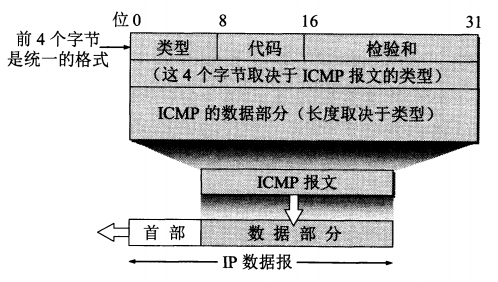
ICMP 报文的种类
分为 ICMP 差错报告报文、ICMP 询问报文。
| ICMP 报文种类 | 类型的值 | ICMP 报文的类型 |
|---|---|---|
| 差错报告报文 | 3 | 终点不可达 |
| 11 | 超时 | |
| 12 | 参数问题 | |
| 5 | 改变路由（Redirect） | |
| 询问报文 | 8 或 0 | 回送（Echo）请求或回答 |
| 13 或 14 | 时间戳请求或回答 |
- 终点不可达：当路由器或主机不能交付数据报时就向源点发送终点不可达报文。
- 超时：当路由器收到生存时间为零的数据报时，除丢弃外，还要向源点发送时间超过的报文。当终点在预先规定的时间内不能收到一个数据报的全部数据报片时，就把已收到的数据报片都丢弃，并向源点发送时间超过的报文。
- 参数问题：当路由器或目标主机收到的数据报的首部中有的字段的值不正确时，就丢弃数据报，并向源点发送参数问题报文。
- 改变路由（重定向）：路由器把改变路由报文发送给主机，让主机知道下次应将数据报发送给另外的路由器。

抽取 IP 数据报数据字段的前 8 字节是为了得到运输层的端口号（对于 TCP 和 UDP）以及运输层报文的发送序号（对于 TCP）。
下面几种情况不发送 ICMP 差错报告报文：
- 对 ICMP 差错报告报文，不再发送 ICMP 差错报告报文。
- 对第一个分片的数据报片的后续数据报片，都不发送 ICMP 差错报告报文。
- 对具有多播地址的数据报，都不发送 ICMP 差错报告报文。
- 对具有特殊地址（如 127.0.0.0 或 0.0.0.0）的数据报，不发送 ICMP 差错报告报文。
ICMP 的应用
分组网间探测 PING（Packet InterNet Groper）
PING 使用了 ICMP 回送请求和回送回答报文。PING 是应用层直接使用网络层 ICMP 的一个例子。
traceroute(unix)/tracert(dos)
源主机向目标主机发送一连串 IP 数据报，数据报中封装的是无法交付的 UDP 用户数据报（使用了非法的端口号），第一个数据报的 TTL 设为 1，第二个设为 2，以此类推。途中的路由器会依次丢弃数据报并返回一个 ICMP 时间超过差错报文。最后直到一个分组到达目标主机，目标主机返回 ICMP 终点不可达差错报告报文。这样就得到了整个路径和各节点的往返时间。
互联网的路由选择协议
有关路由选择协议的几个基本概念
若从路由算法能否随网络的通信量或拓扑自适应地进行调整变化来划分，则可分为两类：静态路由选择策略和动态路由选择策略。
把整个互联网划分为许多较小的自治系统 AS（autonomous system）。自治系统是在单一技术管理下的一组路由器。
据此把路由协议划分为两大类：
- 内部网关协议 IGP（Interior Gateway Protocol）：如 RIP、OSPF 协议。
- 外部网关协议 EGP（External Gateway Protocol）：目前使用最多的是 BGP-4。
内部网关协议 RIP
RIP（Routing Information Protocol） 是一种分布式的基于距离向量的路由选择协议。
RIP 协议要求网络中的每一个路由器都要维护从它自己到其他每个目标网络的距离记录（这一组距离即“距离向量”）。
距离的定义为：从一路由器到直接连接的网络的距离为 1。从一路由器到非直接连接的网络的距离定义为所经过的路由器加 1。
RIP 允许一条路径最多只能包含 15 个路由器，大于 15 即为不可达。
RIP 协议的特点：
- 仅和相邻路由器交换信息。
- 交换的信息是当前本路由器知道的整个路由表。
- 按固定的时间间隔交换路由信息。
经过若干次更新后，所有路由器最终都会知道到达本自治系统中任何一个网络的最短距离和下一跳路由器的地址。
距离向量算法
对每一个相邻路由器发送过来的 RIP 报文，进行以下步骤：
- 对地址 X 的相邻路由器发来的 RIP 报文，先修改此报文中的所有项目：把“下一跳”字段中的地址都改为 X，并把所有的“距离”字段加 1。每一个项目都有三个关键数据：到目的网络 N，距离 d，下一跳路由器 X。
- 对修改后的 RIP 报文中的每个项目，进行以下步骤：
- 若原来的路由表中没有目的网络 N，则把该项目添加到路由表中。
- 否则
- 若下一跳路由器地址是 X，则把收到的项目替换原路由表中的项目。
- 否则（即这个项目是：到目的网络 N，但下一跳路由器不是 X）
- 若收到的项目中的距离 d 小于路由表中的距离，则进行更新。
- 否则什么也不做。
- 若 3 分钟还没收到相邻路由器的更新路由表，则把此相邻路由器标记为不可达的路由器，即把距离置为 16。
- 返回。
以上算法的基础是 Bellman-Ford 算法（或 Ford-Fulkerson 算法）。
RIP 协议的报文格式
RIP 使用运输层的用户数据报 UDP 进行传送，UDP 端口 520。
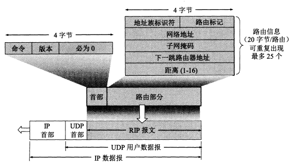
内部网关协议 OSPF
开放最短路径优先 OSPF（Open Shortest Path First）。
- 向本自治系统中所有路由器发送消息。每个相邻路由器又向各自的相邻路由器（除了这条消息来源的路由器）发送这条消息。最终每个路由器都收到这条消息。
- 发送的消息是与本路由器相邻的所有路由器的链路状态。链路状态指的是与哪些路由器相邻，以及该链路的“度量”。“度量”可以表示费用、距离、时延、带宽等，由网络管理人员决定。
- 只有当链路状态发生变化时才发送消息。
为了使 OSPF 能用于大规模网络，OSPF 将一个自治系统再划分为若干个更小的范围，叫做区域。一个区域内的路由器最好不超过 200 个。交换的链路状态信息仅在区域范围内发送。
OSPF 直接用 IP 数据报传送（IP 数据报首部的协议字段为 89）。
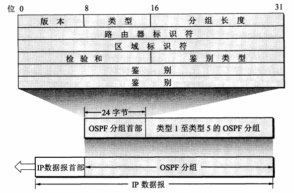
- 版本：当前版本号为 2。
- 类型：五中类型分组中的一种。
- 问候分组：用来发现和维持邻站的可达性。
- 数据库描述分组：向邻站给出自己的链路状态数据库中的所有链路状态项目的摘要信息。
- 链路状态请求分组：向对方请求发送某些链路状态项目的详细信息。
- 链路状态更新分组：用洪泛法对全网更新链路状态。
- 链路状态确认分组：对链路更新分组的确认。
- 分组长度：包括 OSPF 首部在内的分组长度，以字节为单位。
- 路由器标识符：标志发送该分组的路由器的接口的 IP 地址。
- 区域标识符：分组属于的区域的标识符。
- 检验和：用来检测分组中的差错。
- 鉴别类型：目前只有两种，0（不用）和 1（口令）。
- 鉴别：鉴别类型为 0 时就填入 0，鉴别类型为 1 则填入 8 个字符的口令。
外部网关协议 BGP
BGP 采用了路径向量路由选择协议。每一个自治系统至少要选择一个路由器作为该自治系统的“BGP 发言人”。BGP 发言人之间通过建立 TCP 连接（端口号 179）来交换路由信息。
BGP-4 的四种报文：
- OPEN（打开）：用来与相邻的另一个 BGP 发言人建立关系，使通信初始化。
- UPDATE（更新）：用来通告某一路由的消息，以及列出要撤销的多条路由。
- KEEPALIVE（保活）：用来周期性地证实邻站的连通性。
- NOTIFICATION（通知）：用来发送检测到的差错。
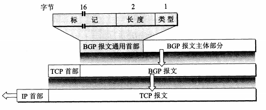
路由器的构成
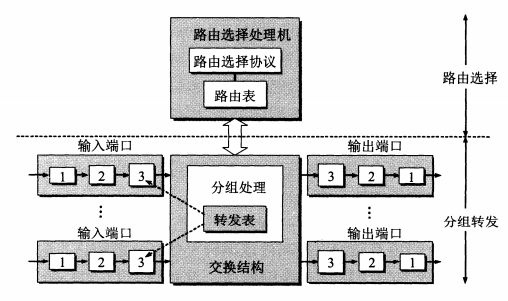
IPv6
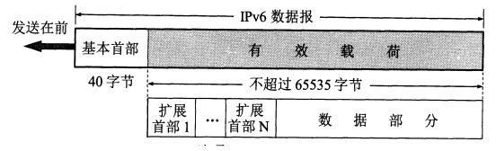
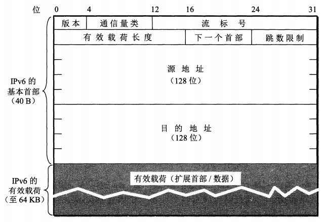
- 版本：占 4 位。IPv6 是 6。
- 通信量类：占 8 位。这是为了区分不同的 IPv6 数据报的类别或优先级。
- 流标号：占 20 位。IPv6 的一个新机制是支持资源预分配，并允许路由器把每个数据报与一个给定的资源分配相联系。所谓“流”就是互联网上从特定源点到特定终点（单播或多播）的一系列数据报，而在这个“流”所经过的路径上的路由器都保证指明的服务质量。
- 有效载荷长度：占 16 位。它指明 IPv6 数据报除基本首部以外的字节数（所有扩展首部都算在有效荷载之内）。最大值是 64 KB。
- 下一个首部：占 8 位。相当于 IPv4 的协议字段或可选字段。
- 当 IPv6 数据报没有扩展首部时，下一个首部字段的作用和 IPv4 的协议字段一样，它的值指出了基本首部后面的数据应交付 IP 层上面的哪一个高层协议。
- 当出现扩展首部时，下一个首部字段的值就标识后面第一个扩展首部的类型。
- 跳数限制：占 8 位。用来防止数据报在网络中无限期地存在。
- 源地址：占 128 位。
- 目的地址：占 128 位。
从 IPv4 向 IPv6 过渡
两种策略：
- 双协议栈：IPv6 数据报进入 IPv4 网络时转换为 IPv4 的格式，出网络时再转换回来，过程中会有部分字段的信息丢失。
- 隧道技术：IPv6 数据报进入 IPv4 网路时被封装进 IPv4 的数据报中，出网络时再抽取出来。
IP 多播
若用单播的形式实现多播，则需要源主机发送 N 次分组。若用 IP 多播的形式，则源主机只需发送 1 次分组，而网络上的各路由器根据各自下游的目标节点的数量来复制相应数量的分组并发送。也就是说将绝大部分计算量分摊到所有的路由器中。当到达末端的局域网时，就转为硬件多播的形式。
IP 多播需要依靠互联网中的多播路由器来实现。
与一个多播源对应的所有接收端统称一个多播组。每个多播组共享同一个 IP 地址，即 D 类地址。
在局域网上进行硬件多播
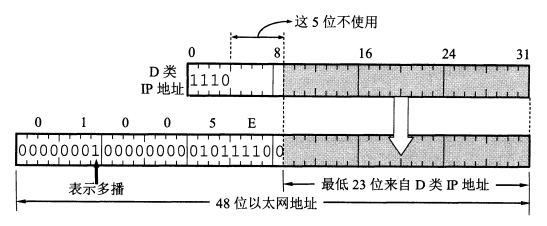
IANA 拥有的以太网地址的高 24 位为 00-00-5E，因此 TCP/IP 协议使用的以太网多播地址块的范围是 00-00-5E-00-00-00 到 00-00-5E-FF-FF-FF。
由于多播地址（D 类地址）与 MAC 地址的映射不是唯一的，所以收到多播数据报的主机还要在 IP 层利用软件进行过滤。
网际组管理协议 IGMP 和多播路由选择协议
网际组管理协议 IGMP
IGMP 使用 IP 数据报传递报文，但它也向 IP 提供服务。因此它是整个 IP 协议的一部分。
- 在主机和多播路由器之间的所有通信都是使用 IP 多播。只要有可能，携带 IGMP 报文的数据报都用硬件多播来传送。因此在支持硬件多播的网络上，没有参加 IP 多播的主机不会收到 IGMP 报文。
- 多播路由器在探询组成员关系时，只需要对所有的组发送一个请求消息的询问报文，而不需要对每一个组发送一个询问报文（虽然也允许对一个特定组发送询问报文）。默认的询问速率是每 125 秒发送一次。
- 当同一个网络上连接有几个多播路由器时，它们能够迅速和有效地选择其中一个来探询主机的成员关系。因此，网络上多个多播路由器并不会引起 IGMP 通信量的增大。
- 在 IGMP 的询问报文中有一个数值 N，它指明一个最长响应时间（默认为 10 秒）。当收到询问时，主机在 0 到 N 之间随机选择发送响应所需经过的时延。因此，若一台主机同时参加了几个多播组，则主机对每一个多播组选择不同的随机数。对应于最小时延的响应最先发送。
- 同一个组内的每一台主机都要监听响应，只要有本组的其他主机先发送了响应，自己就可以不再发送响应了。
多播路由选择协议
多播路由选择协议尚未标准化。已有的多种多播路由选择协议使用了以下三种方法：
- 洪泛与剪除。适用于较小的多播组，所有的组成员接入的局域网也是相邻接的。
- 隧道技术。适用于多播组的位置在地理上很分散的情况。当遇到不支持多播的网络时，就将多播数据报进行封装，成为向单一目的站发送的单播数据报。离开单播网络后再抽取出多播数据报的部分。
- 基于核心的发现技术。对于多播组的大小在较大范围内变化时都适合。对每一个多播组 G 指定一个核心路由器，给出它的 IP 单播地址。这个核心路由器负责维护多播组的成员和转发多播数据报。
一些建议使用的多播路由选择协议：
- 距离向量多播路由选择协议 DVMRP（Distance Vector Multicast Routing Protocol）
- 基于核心的转发树 CBT（Core Based Tree）
- 开放最短通路优先的多播扩展 MOSPF（Multicast extensions to OSPF）
- 协议无关多播-稀疏方式 PIM-SM（Protocol Independent Multicast-Sparse Mode）
- 协议无关多播-密集方式 PIM-DM（Protocol Independent Multicast-Dense Mode）
虚拟专用网 VPN 和网络地址转换 NAT
虚拟专用网 VPN
RFC 1918 指明了一些专用地址。这些地址只能用于一个机构的内部通信，而不能用于和互联网上的主机通信。
- 10.0.0.0 到 10.255.255.255，又称 24 位块
- 172.16.0.0 到 172.31.255.255，又称 20 位块
- 192.168.0.0 到 192.168.255.255，又称 16 位块
若干个专用网之间通过互联网进行通信，这些专用网合称虚拟专用网 VPN（Virtual Private Network）。
网络地址转换 NAT
网络地址转换 NAT（Network Address Translation）需要装有 NAT 软件的路由器。若该路由器有 n 个全球 IP 地址，则专用网内最多同时有 n 台主机接入互联网。若主机较多则需要轮流使用 IP。
为了更有效地利用 NAT 路由器上的全球 IP 地址，现在常用的 NAT 转换表把运输层的端口号也利用上。这样多个本地主机可以公用同一个全球 IP 地址。
使用端口号的 NAT 也叫做网络地址与端口号转换 NAPT（Network Address and Port Translation）。
多协议标记交换 MPLS
MPLS 的工作原理
MPLS 域是指该域中有许多彼此相邻的路由器，并且所有路由器都是支持 MPLS 技术的标记交换路由器 LSR（Label Swtiching Router）。LSR 同时具有标记交换和路由选择这两种功能。
在 MPLS 域的入口处，给每一个 IP 数据报打上固定长度“标记”，然后对打上标记的 IP 数据报用硬件进行转发，即“标记交换”。标记交换在链路层用硬件进行，不上升到第三层查找转发表。
运输层
运输层协议概述
网际层连接的是主机/路由器，运输层连接的是主机上的进程。
运输层的两个主要协议
- 用户数据报协议 UDP（User Datagram Protocol）：传送数据前不需要先建立连接。接收方不需要返回确认。
- 传输控制协议 TCP（Transmission Control Protocol）：提供面向连接的服务。传送前建立连接，传送结束释放连接。不提供广播或多播服务。增加了很多额外开销：确认、流量控制、计时器、连接管理等。
| 应用 | 应用层协议 | 运输层协议 |
|---|---|---|
| 名字转换 | DNS 域名系统 | UDP |
| 文件传送 | TFTP 简单文件传送协议 | UDP |
| 路由选择协议 | RIP 路由信息协议 | UDP |
| IP 地址配置 | DHCP 动态主机配置协议 | UDP |
| 网络管理 | SNMP 简单网络管理协议 | UDP |
| 远程文件服务器 | NFS 网络文件系统 | UDP |
| IP 电话 | 专用协议 | UDP |
| 流式多媒体通信 | 专用协议 | UDP |
| 多播 | IGMP 网际组管理协议 | UDP |
| 电子邮件 | SMTP 简单邮件传送协议 | TCP |
| 远程终端接入 | TELNET 远程终端协议 | TCP |
| 万维网 | HTTP 超文本传送协议 | TCP |
| 文件传送 | FTP 文件传送协议 | TCP |
运输层的端口
端口号为 16 位，共 65535 个端口号。
- 服务器端的端口号
- 熟知端口号/系统端口号：0~1023，这些端口号被指派给了 TCP/IP 最重要的一些应用程序。
- 登记端口号：1024~49151，给没有熟知端口号的程序使用，必须在 IANA 登记。
- 客户端使用的端口号：49152~65535，仅在客户进程运行时动态选择，又称短暂端口号。
用户数据报协议 UDP
UDP 概述
- 无连接：不需要建立连接、释放连接。
- 尽最大努力交付：主机不需要维护复杂的连接状态表。
- 面向报文：UDP 对应用层交下来的报文，既不合并，也不拆分，直接封装交付下一层。UDP 收到 IP 层上交的 UDP 用户数据报后直接去掉首部后交付上一层。
- 没有拥塞控制：网络拥塞不会影响主机的发送速率。
- 支持一对一、一对多、多对一和多对多的交互通信。
- 首部开销小：只有 8 字节。
UDP 的首部格式
四个字段，每个占两个字节。
- 源端口：在需要对方回信时选用。不需要时可用全 0。
- 目的端口：在终点交付报文时必须使用。
- 长度：UDP 用户数据报的长度，最小值是 8（仅有首部）。
- 检验和：检测 UDP 用户数据报在传输中是否有错，有错就丢弃。
计算检验和之前先要在 UDP 用户数据报之前增加 12 字节的伪首部。伪首部既不向上也不向下传递，只为计算检验和之用。
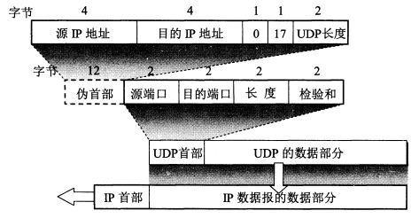
传输控制协议 TCP 概述
TCP 最主要的特点
- 面向连接的运输层协议
- 每一条 TCP 连接只能有两个端点。
- 提供可靠交付的服务。无差错、不丢失、不重复、按序到达。
- 提供全双工通信。TCP 连接两端都设有发送缓存和接收缓存，用来临时存放双向通信的数据。
- 面向字节流。TCP 中的“流”指的是流入到进程或从进程流出的字节序列。应用程序和 TCP 交互是一次一个数据块（大小不等），但 TCP 把数据只看成是一连串的无结构的字节流。TCP 一个报文段包含多少字节取决于对方给出的窗口值和当前网络拥塞的程度，而不是应用层交付数据的长短。
TCP 的连接
TCP 的端点是套接字（socket）：IP:端口。
socket 的其他含义：
- 允许应用程序访问连网协议的应用编程借口 API，即运输层和应用层之间的一种接口，称为 socket API。
- 在 socket API 中使用的一个函数名叫做 socket。
- 调用 socket 函数的端点称为 socket。
- 调用 socket 函数时，返回值称为 socket 描述符。
- 在操作系统内核中连网协议的 Berkeley 实现，称为 socket 实现。
可靠传输的工作原理
停止等待协议
- 发送方对一个分组编号，然后发送
- 发送方必须暂时保留该分组，在收到确认后再删除。
- 设置一个超时时间（略长于平均往返时间），若超时未收到确认则重传；若收到多个同编号的确认，则全部丢弃，并认为分组传送成功。
- 接收方没收到分组，或收到的分组检测出差错，则什么也不做。否则返回确认信息，确认信息的编号与收到的消息的编号相同。
- 若接收方收到多个相同编号的分组，则丢弃该重复分组，并返回确认信息。
- 若反复重传都收不到确认，则认为线路太差不能通信。
连续 ARQ 协议
停止等待协议的信道利用率太低，可转而使用连续 ARQ 协议和滑动窗口协议。
- 发送方维护一个发送窗口，窗口内有 n 个分组，这些分组可以连续发送，不必等待确认。
- 接收方采用累积确认的方式，对按序到达的最后一个分组发送确认。
- 发送方认为被确认的分组以及它之前的分组都已成功，然后将窗口继续滑动。
TCP 报文段的首部格式
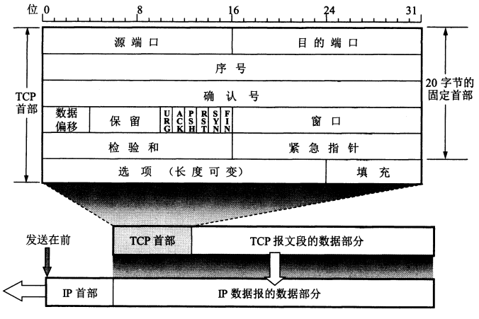
- 源端口和目的端口。
- 序号：范围 [0, 2^32-1]。在范围内循环使用。在一个 TCP 连接中传送的字节流中的每一个字节都按顺序编号。首部中的序号字段指的是本报文段所发送的数据的第一个字节的序号。
- 确认号：期望收到对方下一个报文段的第一个数据字节的序号。
- 数据偏移：指出 TCP 报文段的数据起始处距离 TCP 报文段的起始处有多远。
- 保留：保留为今后使用，目前应置为 0。
- 紧急 URG：1 时有效，告诉系统应尽快传送，而不要按原来的排队顺序来传送。
- 确认 ACK：1 时确认号有效。在连接建立后所有传送的报文段都必须把 ACK 置为 1。
- 推送 PSH：1 时有效。接收方会尽快交付此报文段，而不再等到整个缓存填满后再上交。
- 复位 RST：1 时表明 TCP 连接中出现严重差错，必须释放连接，然后重新建立运输连接。RST 置 1 还用来拒绝一个非法的报文段或拒绝打开一个连接。
- 同步 SYN：在连接建立时用来同步序号。当 SYN = 1 而 ACK = 0 时，表明这是一个连接请求报文段。若对方同意建立连接，则应在响应报文段中使用 SYN = 1 和 ACK = 1。
- 终止 FIN：1 时表明次报文段的发送方已发送完毕，要求释放运输连接。
- 窗口：范围 [0, 2^16-1]。指的是发送本报文段的一方的接受窗口。窗口值高速对方：从本报文段首部中的确认号算起，接收方目前允许对方发送的数据量（字节为单位）。窗口值作为接收方让发送方设置其发送窗口的依据。
- 检验和：检验和字段检验的范围包括首部和数据部分。计算检验和时要在前面加上 12 字节的伪首部，伪首部内容和 UDP 一样，只是把 17 改为 6.
- 紧急指针：仅在 URG = 1 时才有意义，它指出本报文段中的紧急数据的字节数。
- 选项
TCP 可靠传输的实现
以字节为单位的滑动窗口
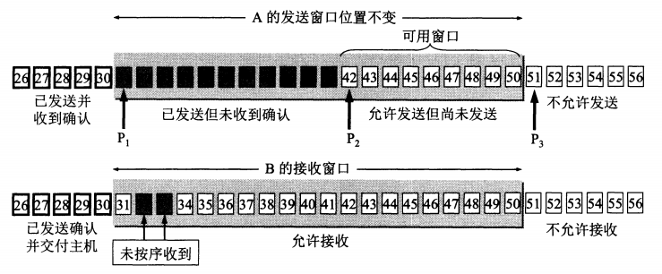
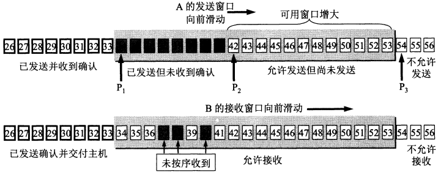
- 虽然发送窗口是根据接收窗口设置的，但两端的信息交互本身有延迟，故同一时间点两端的窗口可能大小不一致。发送方还可能根据网络拥塞情况适当减小发送窗口。
- 对于不按序到达的数据应如何处理，TCP 标准并无明确规定。若接收方一律丢弃，则接收窗口管理会比较简单，但会占用更多网络资源。通常是把不按序到达的分组先暂存在接收窗口中，等到齐后一起上交。
- TCP 要求接收方必须有累积确认的功能，可以在合适的时候发送确认，也可以在自己有数据要发送时顺带确认，但不应过分推迟发送确认。TCP 标准规定，确认推迟时间不超过 0.5 秒。若收到一连串最大长度的报文段，则必须每个一个报文段就发送一个确认。
超时重传时间的选择
TCP 采用一种自适应算法，它记录一个报文段发出的时间，以及收到确认的时间，两者之差就是报文段的往返时间 RTT。TCP 保留了 RTT 的一个加权平均往返时间 RTTs（smoothed）。
新的 RTTs = (1 - α) (旧的 RTTs) + α (新的 RTT 样本), 0 <= α < 1
RFC 6298 推荐 α 值为 1/8。
超时重传时间 RTO（RetransmissionTime-Out）应略大于 RTTs。RFC 6298 建议如下：
RTO = RTTs + 4 * RTTd
其中 RTTd 是 RTT 的偏差的加权平均值，它与 RTTs 和新的 RTT 样本之差有关。RFC 6298 建议如下，β 的推荐值是 1/4：
新的 RTTd = (1 - β) (旧的 RTTd) + β |RTTs - 新的 RTT 样本|, 0 <= β < 1
若某报文段重传过，这时收到了它的确认报文，那么应该认为它是对原始报文的确认还是对重传报文的确认？这个选择会很大程度上影响 RTTs 和 RTO 的计算。
Karn 提出了一个算法：在计算加权平均 RTTs 时，只要报文段重传了，就不采用其往返时间样本。
但是这样的话，若报文段的时延突然增大很多，即在原来得出的重传时间内，不会收到确认报文段。于是重传报文段。但根据 Karn 算法，此时超时重传时间无法更新。
因此要对 Karn 算法进行修正：报文段每重传一次，就把超时重传时间 RTO 增大一些。一般是取旧的重传时间的 2 倍。当不再发生重传时，在根据公式计算超时重传时间。
选择确认 SACK
RFC 2018 规定，如果要使用选择确认 SACK，那么在建立 TCP 连接时，就要在 TCP 首部的选项中加上“允许 SACK”的选项，而双方必须都事先商定好。如果使用选择确认，那么原来首部中的“确认号字段”的用法仍然不变。只是以后在 TCP 报文段的首部中都增加了 SACK 选项，以便报告收到的不连续的字节块的边界。
TCP 的流量控制
利用滑动窗口实现流量控制
流量控制就是让发送方的发送速率不要太快，要让接收方来得及接收。
TCP 为每一个连接设有一个持续计时器。只要 TCP 连接的一方收到对方的零窗口通知，就启动持续计时器。若计时器时间到了，就发送一个零窗口探测报文段，而对方就在确认这个探测报文段时给出现在的窗口值。
TCP 的拥塞控制
拥塞控制的一般原理
拥塞控制是防止过多的数据注入到网络中，这样可以使网络中的路由器或链路不致过载。拥塞控制是一个全局性的过程。
流量控制指点对点的通信量的控制。
从控制论的角度来看，主要分为开环控制和闭环控制两种方法。
- 开环控制就是设计时将发生拥塞的因素考虑周到，一旦系统运行后就不能再修改。
- 闭环控制是基于反馈环路：
- 检测网络系统以便检测到拥塞在何时何处发生。
- 把拥塞发生的信息传送到可采取措施的地方。
- 调整网络系统的运行以解决问题。
主要指标：由于缺少缓存空间而丢弃的分组的百分比、平均队列长度、超时重传的分组数、平均分组时延、分组时延的标准差等。
TCP 的拥塞控制方法
慢开始和拥塞避免
此为基于窗口的拥塞控制。发送方维护一个拥塞窗口 cwnd（congestion window）。拥塞窗口的大小取决于网络的拥塞程度，并且动态变化。发送方让自己的发送窗口等于拥塞窗口。
只要网络没出现拥塞，拥塞窗口就增大一些。若出现拥塞就减小。判断网络拥塞的依据是出现了超时。
慢开始：一开始，由小到大逐渐增大发送窗口。cwnd 的值与发送方的最大报文段 SMSS（Sender Maximum Segment Size）有关。
拥塞窗口 cwnd 每次的增加量 = min(N, SMSS)
其中 N 是原先未被确认的、但现在被刚收到的确认报文所确认的字节数。每经过一个传输轮次，cwnd 就加倍。
为防止 cwnd 增长过大引起网络拥塞，还需要设置一个慢开始门限 ssthresh：
- 当 cwnd < ssthresh，使用慢开始算法；
- 当 cwnd > ssthresh，改用拥塞避免算法；
- 当 cwnd = ssthresh，两者都可使用。
拥塞避免算法：让 cwnd 缓慢增大，每经过一个 RTT 就把发送方的拥塞窗口 cwnd 加 1。
主动队列管理 AQM
路由器的网络层对于过多的分组采用尾部丢弃策略。当一个路由器收到的分组过多时，往往会丢弃一系列的分组，而这些分组中有分属多个 TCP 连接的数据报，因而使得多个 TCP 连接检测到超时而同时进入慢开始状态，于是大片的节点的通信量突然下降很多，网络恢复正常后又突然增大很多。
为避免这种全局同步现象，1998 年提出了主动队列管理 AQM（Active Queue Management）。即当队列长度打到某个警惕值时就开始丢弃后面的分组，而不是等达到队列最大值。
AQM 有不同的实现方法。比较流行的是随机早期检测 RED（Random Early Detective）
RED 需要路由器维护两个参数，即队列长度最小门限和最大门限。
- 若平均队列长度小于最小门限，则把新到达的分组放入队列进行排队。
- 若平均队列长度超过最大门限，则把新到达的分组丢弃。
- 若平均队列长度位于两者之间，则按照某一概率 p 丢弃新分组。
TCP 的运输连接管理
TCP 的连接建立
TCP 连接建立过程中要解决的三个问题：
- 要是每一方知道对方的存在；
- 要允许双方协商一些参数（如最大窗口值、是否使用窗口扩大选项和时间戳选项以及服务质量等）；
- 能够对运输实体资源（如缓存大小、连接表中的项目等）进行分配。
TCP 连接的建立采用 C/S 方式。TCP 建立连接的过程叫做握手，握手需要在客户和服务器之间交换三个 TCP 报文段。
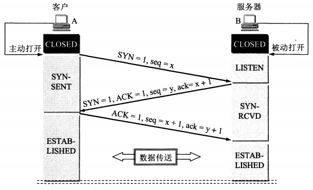
其中 B 发送给 A 的报文段也可拆成一个确认报文段（ACK = 1，ack = x + 1）和一个同步报文段（SYN = 1，seq = y），这样就变成了四报文握手。
TCP 的连接释放
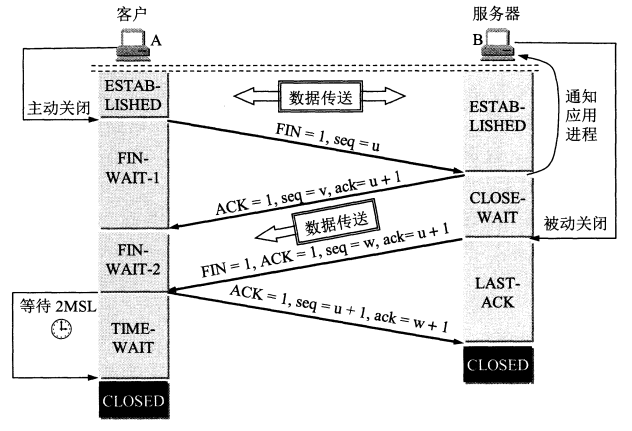
实际上是先关闭了 A 到 B 的连接，然后 B 传完剩下的数据（若有的话），再关闭 B 到 A 的连接。
TCP 的有限状态机
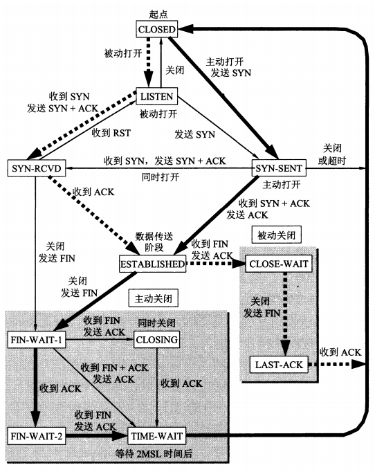
应用层
域名系统 DNS
互联网的域名结构
域名中的标号由英文字母、数字和“-”组成，每一个标号不超过 63 个字符，也不区分大小写。完整域名不超过 255 个字符。
文件传送协议
FTP 的基本工作原理
使用 TCP 可靠的运输服务。使用客户服务器方式。一个 FTP 服务器进程可同时为多个客户进程提供服务。FTP 的服务器进程由两大部分组成：一个主进程，负责接受新的请求；另外有若干个从属进程，负责处理单个请求。
- 打开熟知端口（21），使客户进程能够连接上。
- 等待客户进程发出连接请求。
- 启动从属进程处理客户进程发来的请求。从属进程对客户进程的请求处理完毕后即终止，但从属进程在运行期间根据需要还可能创建其他一些子进程。
- 回到等待状态，继续接受其他客户进程发来的请求。主进程与从属进程的处理是并发进行的。
进行文件传输时，客户和服务器之间要建立两个并行的 TCP 连接：控制连接和数据连接。控制连接在整个会话期间一直保持打开。
简单文件传送协议 TFTP
TFTP 使用 UDP 数据报，因此 TFTP 有自己的差错改正措施。
TFTP 的主要特点：
- 每次传送的数据报文中有 512 字节的数据，但最后一次可不足 512 字节。
- 数据报文按序编号，从 1 开始。
- 支持 ASCII 码或二进制传送。
- 可对文件进行读或写。
- 使用很简单的首部。
- 发送完一个文件块后就等待确认，若超时未确认则重发数据 PDU（Protocol Data Unit）。若接收方超时未收到下一个文件块，也要重发确认 PDU。
远程终端协议 TELNET
TELNET 使用客户服务器方式。服务器主进程等待新的请求，并产生从属进程来处理每一个连接。
TELNET 定义了数据和命令应怎样通过互联网。这些定义就是网络虚拟终端 NVT（Network Virtual Terminal）。客户端和服务端都要把本地数据格式转换为 NVT 格式再通过网络传送。
NVT 的通信都是一个字节，使用 7 位 ASCII 码传送数据，最高位置 1 时用作控制命令。
万维网 WWW
统一资源定位符 URL
URL 的一般形式：
<协议>://<主机>:<端口>/<路径>
超文本传送协议 HTTP
超文本传送协议 HTTP（HyperText Transfer Protocol）使用 TCP 连接进行传送。但 HTTP 本身是无连接的，它不考虑重传的问题。
HTTP/1.0 的每次 HTTP 交互都要创建一个 TCP 连接。请求报文在 TCP 第三次握手时传送，接着服务端返回 HTTP 响应报文。因此总共消耗 2 * RTT 的时间。
HTTP/1.1 使用持续连接。服务器在发送响应之后仍然在一段时间内保持这条连接。持续连接有两种工作方式：非流水线和流水线方式。
非流水线方式是客户在收到前一个响应后才发出下一个请求。流水线方式则是客户可以连续发送请求，不必等待响应。
HTTP 的报文结构
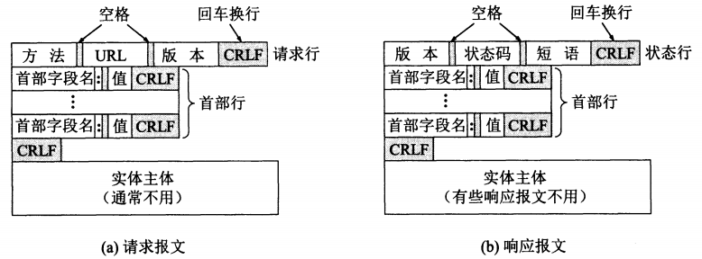
- 开始行：用于区分请求和响应。分别称为请求行和状态行。
- 首部行：用来说明浏览器、服务器或报文主体的一些信息。首部可以有多行，也可以不使用。
- 实体主体：可以为空。
请求报文的一些方法：
| 方法 | 意义 |
|---|---|
| OPTION | 请求一些选项信息 |
| GET | 请求读取由 URL 所标志的信息 |
| HEAD | 请求读取由 URL 所标志的信息的首部 |
| POST | 给服务器添加信息 |
| PUT | 在指明的 URL 下存储一个文档 |
| DELETE | 删除指明的 URL 所标志的资源 |
| TRACE | 用来进行环回测试的请求报文 |
| CONNECT | 用于代理服务器 |
响应报文的状态码的分类：
- 1xx 表示通知信息。
- 2xx 表示成功。
- 3xx 表示重定向。
- 4xx 表示客户的差错
- 5xx 表示服务器的差错
电子邮件
简单邮件传送协议 SMTP
连接建立
发送方邮件服务器通过熟知端口号 25 与接收方邮件服务器建立 TCP 连接。SMTP 不使用中间的邮件服务器。
邮件传送
- 从 MAIL 命令开始，后面跟发件人地址：
MAIL FROM:<zhangsan@gmail.com>。 - SMTP 服务器响应：
250 OK，或返回一个代码指出问题原因451处理时出错、452存储空间不够、500命令无法识别等。 - 发送一个或多个 RCPT 命令（即 recipient）：
RCPT TO:<lisi@gmail.com>。每个 RCPT 命令都应有 SMTP 服务器的返回信息。 - DATA 命令。表示要开始传送邮件内容了。
- SMTP 服务器返回
354 Start mail input;end with <CRLF>.<CRLF>。 - 开始发送邮件内容。发送完毕之后，再发送
<CRLF>.<CRLF>。 - SMTP 服务器返回信息
250 OK或错误代码。 - 客户端发送 QUIT 命令。
- SMTP 服务器返回
221服务关闭。释放 TCP 连接。
电子邮件的信息格式
电子邮件分为信封和内容两大部分。电子邮件系统会自动从内容中抽取必要信息填入信封。RFC 5322 规定了内容中的首部格式，而主体部分由用户自由撰写。
首部是一系列以关键字为键的键值对，键值间以冒号分隔。
To后面填入一个或多个收件人的电子邮件地址。Subject是邮件主题。Cc抄送 Carbon copy。Bcc盲复写副本 Blind carbon copy，即密送。From和Date发件人的电子邮件地址和发送日期。Reply-To对方回信所发送的地址。
通用互联网邮件扩充 MIME
MIME（Multipurpose Internet Mail Extensions）弥补了 SMTP 的缺陷：
- 不能传送二进制对象（曾试图把二进制转为 ASCII，但未形成正式标准）；
- 限于 ASCII 码；
- SMTP 服务器会拒绝超过一定长度的邮件；
- 某些 SMTP 的实现并没有完全按照 SMTP 的互联网标准，比如：
- 回车、换行的删除和增加；
- 超过 76 个字符时的处理：截断或自行换行；
- 后面多余空格的删除；
- 将制表符转换为若干个空格。
MIME 主要包括以下内容：
- 5 个新的邮件首部字段。
- MIME-Version：版本号。若无此项，则为英文文本。
- Content-Description：说明邮件主体是否是图像、音频或视频。
- Content-Id：邮件的唯一标识符。
- Content-Transfer-Encoding：在传送时邮件的主体是如何编码的。
- Content-Type：说明邮件主体的数据类型和子类型。
- 定义了许多邮件内容的格式，对多媒体电子邮件的表示方法进行了标准化。
- 定义了传送编码，可对任何内容格式进行转换，而不会被邮件系统改变。
动态主机配置协议 DHCP
DHCP（Dynamic Host Configuration Protocol）提供了一种机制，称为即插即用连网，它允许一台计算机加入新的网络和获取 IP 地址而不用手工参与。
应用进程跨越网络的通信
当应用进程需要进行网络通信时，首先发出 socket 系统调用，请求操作系统为其创建一个“套接字”。操作系统会把网络通信需要的一些资源（存储空间、CPU 时间、网络带宽等）分配给该进程。这些资源整体用一个套接字描述符（socket descriptor）号码来表示，然后把这个套接字描述符返回给应用进程。此后，应用进程所进行的网络操作都必须使用这个套接字描述符。